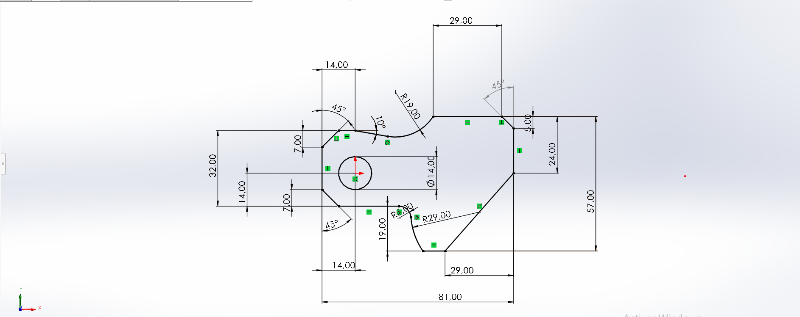
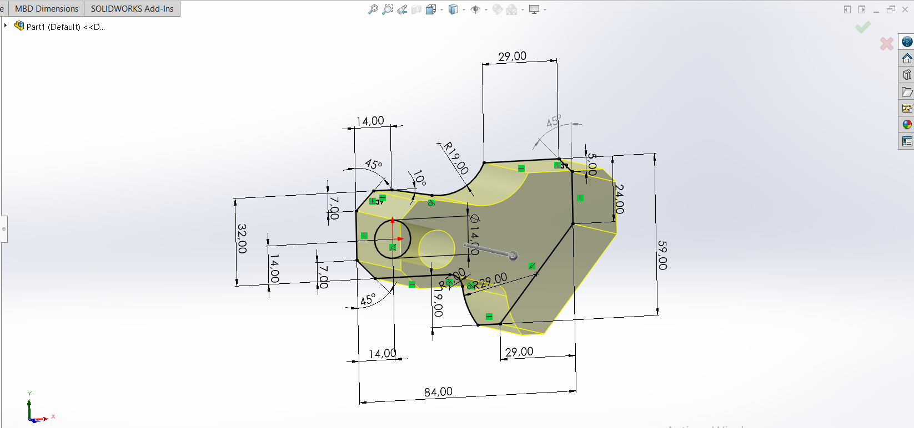

Tekbot Robotics Challenge 2025 — Test 2 : Niveau Intermédiaire SOLIDWORKS
Sommaire
🔹 Introduction
Ce test de niveau intermédiaire en CAO sur SOLIDWORKS, réalisé dans le cadre du Tekbot Robotics Challenge 2025, permet de mettre en pratique plusieurs compétences :
- Créer des pièces paramétriques et adaptables
- Modifier des géométries existantes de manière avancée
- Ajouter des fonctions 3D comme les poches
- Réaliser un assemblage complet tout en contrôlant la masse et le centre de gravité
Le test se déroule en quatre phases : trois étapes de modélisation de pièce, puis un exercice d’assemblage final.
Toutes les modélisations se font dans l’environnement MMGS (millimètre, gramme, seconde) avec une précision au centième. Le matériau utilisé est l’acier AISI 1020, de densité 0,0079 g/mm³.
🔧 Partie I – Conception des pièces paramétrées
- a) Paramètres : A = 81.00 ; B = 57.00 ; C = 43.00
Fichier : Part1(a).SLDPRT
Masse obtenue : 977,95 g
🖼️ Capture de la pièce
 - b) Paramètres : A = 84.00 ; B = 59.00 ; C = 45.00
Fichier : Part1(b).SLDPRT
Masse obtenue : 1068,75 g
🖼️ Capture de la pièce

Fonctions utilisées
- En 2D (Esquisse) : Ligne, arc, cercle, cotation intelligente, relations géométriques
- En 3D (Fonctions) : Bossage/Base extrudé, coupe extrudée, congé, perçage à partir d’esquisse
✂️ Partie II – Modification de la pièce
- Paramètres mis à jour : A = 86.00 ; B = 58.00 ; C = 44.00
- Modification directe des dimensions dans l’arbre de création
- Ajout d’une coupe extrudée pour retirer de la matière
- Fichier : Partie 2.SLDPRT
- Masse obtenue : 628,18 g

🧩 Partie III – Ajout d’une poche
- Ajout d’une poche latérale pour rendre la pièce asymétrique
- Création d’une esquisse rectangulaire sur une face latérale, puis application d’une coupe extrudée
- Fichier : Partie 3.SLDPRT
- Masse obtenue : 426,90 g

🛠️ Assemblage – Maillons de chaîne
- Téléchargez et extrayez le fichier ZIP contenant les pièces
- Importez les pièces dans SOLIDWORKS
- Appliquez les contraintes nécessaires : concentricité, coïncidence, et alignement à l’origine
Cas a)
- Paramètres : A = 25° ; B = 125° ; C = 130°
- Fichier : Assem3.SLDASM question (a).SLDASM
- Centre de gravité (mm) : X = 348,66 ; Y = -88,48 ; Z = -91,40
Cas b)
- Paramètres : A = 30° ; B = 115° ; C = 135°
- Fichier : Assem3.SLDASM question (b).SLDASM
- Centre de gravité (mm) : X = 327,67 ; Y = -98,39 ; Z = -102,91
Présentation du challenge
Nous vous présentons ici la modélisation complète du challenge facultatif.
Pour ce challenge, nous avons modélisé la pièces en utilisant les fonctions de base ainsi que des fonctions avancée de SolidWorks comme le bossage ,nervure, la coupe extrudée etc.. tout en respectant le système MMGS et le matériau imposé (acier AISI 1020).
la pièce en 3D

✅ Conclusion
- Maîtrise de la modélisation paramétrique
- Capacité à modifier et enrichir des fonctions 3D
- Gestion précise des relations d’assemblage
- Contrôle rigoureux de la masse et du centre de gravité
Toutes les étapes ont été soigneusement documentées et enregistrées dans des fichiers distincts (.SLDPRT et .SLDASM).